Tentang Indomie
Indomie diproduksi oleh Indofood, pelopor mie instan di Indonesia dan merupakan salah satu produsen mie instan terbesar di dunia. Indomie hadir dalam banyak varietas mulai dari rasa sup klasik seperti ayam, sayuran, dan kari ayam, hingga indomie Mi Goreng rasa kami yang paling populer. Tersedia di lebih dari 100 negara di seluruh dunia seperti Australia, Selandia Baru, Amerika Serikat, Kanada, di seluruh Asia, Afrika, Eropa dan negara-negara Timur Tengah.Dengan kapasitas produksi tahunan 19 miliar bungkus, tidak mengherankan jika Indomie adalah rasa, yang disukai oleh dunia.
